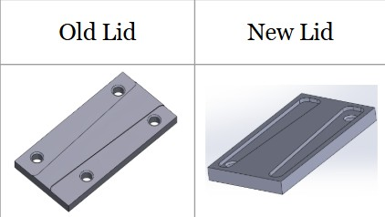
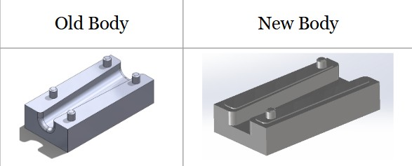

Project Overview
B.U.M.E.S (Boston University Manufacturing Execution Software) is a fully automated computer-integrated manufacturing cell that produces a two-part cord organizer — the Cordganizer — consisting of a polycarbonate lid and an HDPE body. The original system took ~24 minutes to complete one cycle of two assemblies, with only 40% value-added process time.
This project tackled three interlocked aims: redesigning the Cordganizer CAD/CAM for faster machining, re-orchestrating the BUMES scripts and UR robot programs for parallel operation, and integrating an OpenCV-based vision pipeline that allows a third robot (Rosie) to identify and sort finished assemblies by color entirely without human intervention.
CAD/CAM Redesign
Redesign both parts in SolidWorks CAM to reduce unnecessary operations, tool changes, and machining distance. Target: halve milling time per part.
BUMES Script Optimization
Restructure UR robot programs and BUMES task scheduling to enable alternate, parallel machining across two CNC mills, eliminating idle time at the bottleneck.
Vision-Based Sorting
Integrate OpenCV color classification with robotic pick-and-place (Rosie) to autonomously sort finished cordganizers into colored bins based on part color.
The Manufacturing Cell
The BUMES cell spans multiple stations with two Universal Robots arms (Mary at Station 3, Edie at Station 4), two CNC mills (Cayenne and Paprika), a conveyor, gravity feeders, squaring fixtures, and a third robot (Rosie) at the vision/sorting station.


Aim 1: CAD/CAM Redesign
The original Cordganizer design included unnecessary facing passes, redundant hole operations, and four chamfers per lid, costing machine time without contributing to fit or function. The redesigned CAD reduced operations to pocket milling with two precision holes and two chamfers for the lid, and a single roughing pass with deep pocket milling for the body.


| Part | Version | CAM Operations | Tool Changes | Machining Time |
|---|---|---|---|---|
| Lid | Old | Facing, 4 Holes, 4 Chamfers | 2 | 3 min 45 s |
| Lid | New | Pocket Milling, 2 Holes, 2 Chamfers | 1 | 1 min 45 s |
| Body | Old | Step-Down (2 pass), Deep Pocket (2 pass), 4 Chamfers | 3 | 6 min 24 s |
| Body | New | Roughing (1 pass), Deep Pocket (1 pass), Slot Perimeter, 2 Chamfers | 2 | 3 min 16 s |
Feed rate was recalculated using Fm = n × z × Ft. Scaling the feed per tooth by a height ratio of 0.667 (reduced depth-of-cut) brought the cutting feedrate from 52.8 in/min down to 35.2 in/min, significantly reducing tool load while maintaining surface quality.
Aim 2: BUMES Script & Process Optimization
The original BUMES cycle ran Mary and Edie sequentially, leaving one robot idle while the other machined. The redesigned orchestration introduced alternate machining: while Mary finishes a body on Cayenne, Edie begins a lid on Paprika. This achieved steady-state overlap and doubled the effective throughput.
13 individual UR programs were created (7 per robot), using a letter-and-number naming convention to eliminate script confusion. The cycle now produces 4 cordganizers per 24.6-minute run, compared to 2 in 24 minutes previously.
UR Program Structure (Mary)
- gravityFeederW.urp — Takes lid stock from gravity feeder, squares in fixture
- gravityFeederZ.urp — Takes body stock from gravity feeder, squares in fixture
- _adminCG-WXYZLoadMillMakeLid.urp — Loads stock into Cayenne, mills lid
- _adminCG-WXYZUnoadMillLid.urp — Removes lid, places in vertical vise
- _adminCG-WXYZLoadMillMakeBody.urp — Loads stock into Cayenne, mills body
- _adminCG-WXYZUnoadMillBody.urp — Removes body to conveyor
- _adminCG-AssembleAToB.urp — Grabs lid, squares, places on body for snap assembly
Bottleneck Analysis (Routing Diagram)
- Body milling on Paprika: 230 s at 100% utilization confirmed bottleneck
- Lid milling on Cayenne: 125 s at 54% utilization
- Load operations: 70–75 s at ~30% utilization
- Assembly step: 90 s at 39% utilization
- Alternate machining strategy reduces effective cycle time per assembly from 11.9 → 7.2 min
- System designed to run infinitely once initialized

Aim 3: Vision-Based Part Sorting
When the original inspection camera failed three days before the final demo, the vision pipeline was rebuilt from scratch using OpenCV. The new system uses edge detection and contour analysis to identify assembled cordganizers in the camera's region of interest, classifies them as Blue or White based on average BGR values, and signals Rosie to route the part to the correct bin.
def classify_color(bgr): b, g, r = bgr if b < 180 and g < 120 and r < 130: return "Blue" elif r > 120 and g > 120 and b > 120: return "White" else: return "Unknown"
# Connect via RTDE interface rtde_c = rtde_control.RTDEControlInterface( "10.241.34.45") # Gripper open/close via digital out rtde_io_.setStandardDigitalOut(0, True) print("Gripper closed") # Convert pose to joint angles q = rtde_c.getInverseKinematics(p_home) rtde_c.moveJ(q, speed=0.3)
# Region of interest roi = frame[50:360, 140:450] # Edge detection gray = cv2.cvtColor(roi, COLOR_BGR2GRAY) blurred = cv2.GaussianBlur(gray, (5,5), 0) edges = cv2.Canny(blurred, 30, 100) # Find & filter contours contours, _ = cv2.findContours( edges, RETR_EXTERNAL, CHAIN_APPROX_SIMPLE) for cnt in contours: if cv2.contourArea(cnt) > 1000: b, g, r = cv2.mean(obj_roi)[:3] return classify_color((b, g, r))
color = get_object_color() print(f"Detected: {color}") if color == "White": q = rtde_c.getInverseKinematics( white_position) rtde_c.moveJ(q, speed=0.3) rtde_io_.setStandardDigitalOut(0, False) elif color == "Blue": q = rtde_c.getInverseKinematics( blue_position) rtde_c.moveJ(q, speed=0.3)
Defined Waypoints (x, y, z, rx, ry, rz)
- p_home — Safe neutral position
- p_home_to_pallet / _down — Conveyor pickup approach & grasp
- pallet_to_cam — Transit to camera station
- p_home_cam / p_home_abvcam — Camera presentation poses
- away_from_cam — Clear view for image capture
- white_position / blue_position — Bin drop poses
Communication Architecture
- MES (BUMES) — task scheduling, status tracking, process orchestration
- URScript / RTDE — real-time data exchange and motion control with UR arms
- G-Code — CNC toolpath programs generated from SolidWorks CAM
- Standard Digital I/O — pneumatic gripper open/close control
- os.system() bridge — MES to Python script handoff
- OpenCV VideoCapture — USB webcam at index 1 (DirectShow)
Full BUMES Cycle Demo
One complete BUMES cycle: Mary and Edie machine and assemble four cordganizers in parallel using alternate machining, then Rosie identifies each part by color and routes it to the correct bin — entirely without human intervention.
Results & Outcomes
Limitations & Future Work
Current Limitations
- Camera sensitivity to ambient lighting conditions reduced classification reliability
- No built-in wait() capability between BUMES operations caused timing issues
- Vision limited to two colors; no defect geometry detection
- Pose waypoints are manually defined — not adaptive to part variation
Future Work
- Optimize CAM for exclusively snap-fit assembly; further reduce milling times
- Eliminate burring through finishing passes or reduced milling feed
- Expand vision features: size classification, hole detection, surface defect identification
- Integrate data collection and SPC tracking per-part across full production run
- Implement adaptive wait() synchronization between UR scripts
Project Team